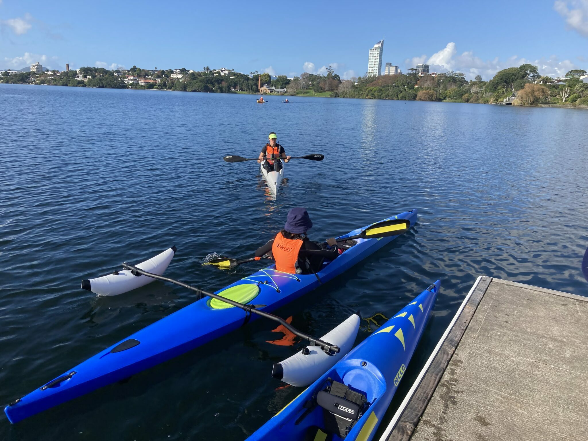

NSCC

.webp)
Development Squad is for all ages and all abilities who would like a social paddle together with coaches available for technique development. Open to all club members and included in your membership. Please note that for those who are fairly new to the sport you must have preferably completed one of our Try Learn Explore courses or demonstrate suitable ability before joining the Development Squad.
Cost: No additional charge. Built into your membership fees.
Development Plus provides paddlers with the opportunity to extend their training through additional paid sessions. These sessions are tailored to who is in the group and provide extra time on the water. These sessions will include balance development, focused skills training and fun. The aim is to further support technical growth, confidence, and overall paddling progression as an option for people not old enough or not yet meeting the requirements for Intermediate Squad.
Adult Intermediate is an adult only session for those that want a social paddle with other adults together with a coach available for technique development.
Intermediate Squad is for those paddlers wanting to advance beyond the development level and improve performance. This is currently the final level of our development pathway squad before advancing to the senior squads. You must already be a competent K1 paddler and will need to be approved by our Participation Lead coach Kendra Tate to join this squad.You will be expected to commit to the whole term for each session you select. Limited to 8 paddlers per session per term.
